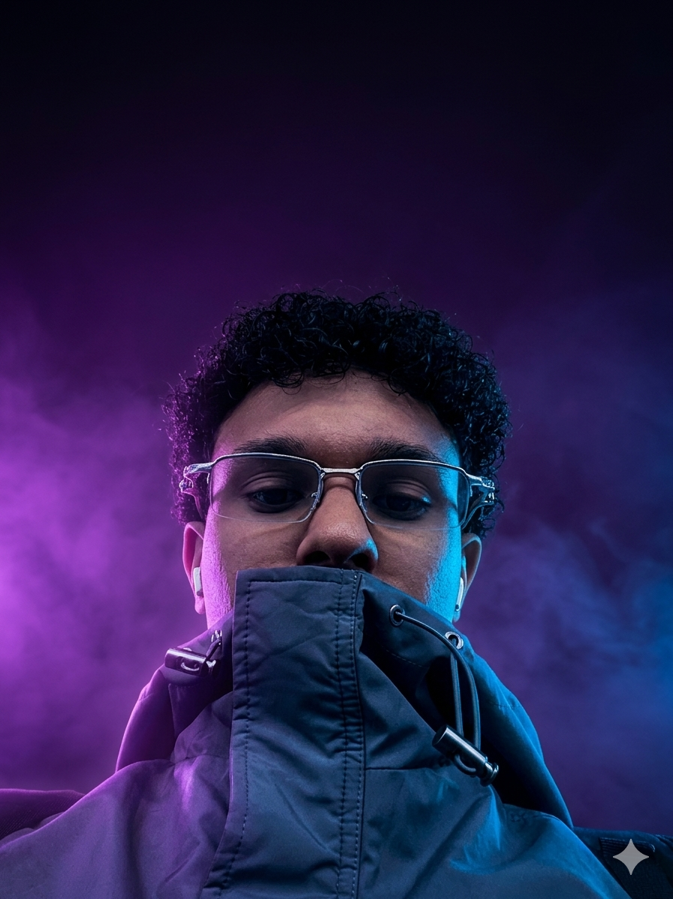

Transformo ideias em experiências digitais inovadoras. Especializado em criar sites modernos, rápidos e focados em alta performance e design premium.

Minha paixão por tecnologia começou na adolescência, quando aprendi de forma autodidata por meio de tutoriais. No Ensino Médio, cursei Desenvolvimento de Sistemas na ETEC Abdias do Nascimento, adquirindo conhecimentos em programação e design. Participei de hackathons e competições no-code, além do programa EmpreendeSim da USP, no qual minha equipe conquistou destaque. Entre os projetos realizados, o principal foi o aplicativo Sangue Herói, voltado à conscientização sobre doação de sangue, que obteve reconhecimento de instituições públicas e visibilidade na mídia.
Participei de uma iniciativa voltada à empregabilidade de Pessoas com Deficiência, conectando empresas a profissionais PCD e promovendo inclusão. Após o Ensino Médio, ingressei em Análise e Desenvolvimento de Sistemas e passei a me aprofundar em WordPress, área que me levou a fundar a startup LandiUp, focada em presença digital. No futuro, pretendo concluir a graduação e cursar Design Gráfico para ampliar minhas habilidades e impacto profissional.
Desenvolvi um site moderno e responsivo para uma cafeteria, valorizando o ambiente, os produtos e facilitando o contato e os pedidos online.
Ver ProjetoAplicativo criado para incentivar a doação de sangue, desenvolvido por alunos de escola técnica em SP. O projeto recebeu reconhecimento da CBN, sendo destaque em entrevista sobre inovação e impacto social.
Ver ProjetoAplicativo de doação desenvolvido para uma ONG, criado como projeto escolar. A plataforma conecta doadores à causa, facilitando contribuições e engajamento social.
Ver ProjetoSistema de gerenciamento de tarefas colaborativo em tempo real. Crie, organize e compartilhe tarefas com seu grupo escolar ou de trabalho — todos editando ao mesmo tempo, sem conflito.
Ver ProjetoCriação de site responsivo para hamburgueria, com foco em experiência do usuário, apresentação dos produtos e conversão de pedidos.
Ver ProjetoSite completo para uma loja de roupas, desenvolvido com HTML, CSS e JavaScript. Layout moderno, responsivo e focado em conversão — do catálogo de produtos até a experiência de compra.
Ver Projeto